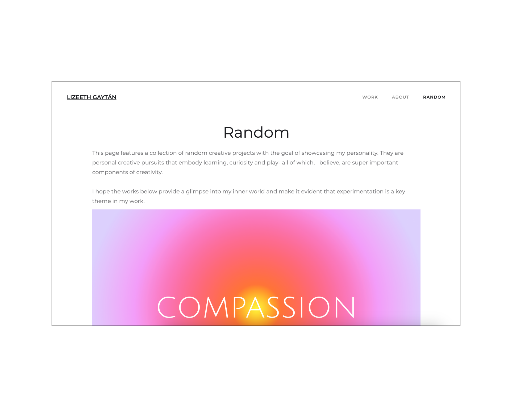

Portfolio Re-design
This is a low fidelity re-design of the portfolio you're currently viewing. One of my biggest obstacles as a new UX designer has been landing interviews. So, I decided to narrow down the possible issue. To find the problem, I decided to use TikTok's UX design community, particularly by viewing portfolio reviews. By observing experienced designers critique portfolios, I realized that my most obvious issues focused on the layout of my case studies pages.
Brainstorming Wireframe
Design Iteration
The first round of images below shows the changes made to the top navigation bar. Image 1 is an example a nav bar that is not fixed to the top and goes out of view upon scrolling. While the 2nd image shows a sticky nav bar that ensures the navigation flow is not impeded. The 3rd and 4th images display the difference between the lack of and an addition of an in page navigation section to the case study pages. Finally, the 5th and 6th images display a layout change in the Random page which focused on adding a hero image and introduction to the page's content.
Before
After

